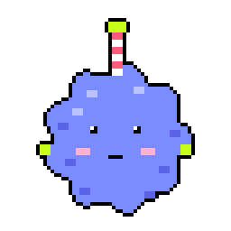

Pole Puff
A pet app by Astra.

Draft. Pole Puff manages Astra's Infinite Pole; nothing is built yet, and the art is a hand-drawn stand-in. One of the pets of Astra's PetOS.
A pet app by Astra.

Draft. Pole Puff manages Astra's Infinite Pole; nothing is built yet, and the art is a hand-drawn stand-in. One of the pets of Astra's PetOS.